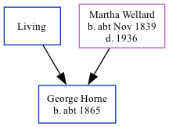

George Horne c1865 -
[ Home ] | [ Calendar ] | [ Surnames Index ] | [ Family History ]The child of George Horn and Martha WellardGeorge Horne, the first cousin three-times-removed on the father's side of Nigel Horne, was born in Ramsgate, Kent, England c. 18651,2,3,4,5. Like his father, he was a brewery laborer.
Throughout his life, George lived in several places: at 76 Queen Street in Ramsgate on Apr 2, 18716; at his birthplace in 18812; at Queen Street in Ramsgate on Apr 3, 18817; at his birthplace in 18913; at Paradise in Ramsgate on Mar 31, 19018 (when he was living with his parents); and at Ethelbert Road in Ramsgate on Apr 2, 19119 (when he was living with his parents).
Parents
- George
- Martha was born c. Nov 1839
Citations
- 1871 England Census Online publication - Provo, UT, USA: The Generations Network, Inc., 2004.Original data - Census Returns of England and Wales, 1871. Kew, Surrey, England: The National Archives of the UK (TNA): Public Record Office (PRO), 1871. Data imaged from the National
- 1881 England Census Online publication - Provo, UT, USA: The Generations Network, Inc., 2004. 1881 British Isles Census Index provided by The Church of Jesus Christ of Latter-day Saints © Copyright 1999 Intellectual Reserve, Inc. All rights reserved. All use is subject to the (Relation to Head of House: Son)
- 1891 England Census Online publication - Provo, UT, USA: The Generations Network, Inc., 2005.Original data - Census Returns of England and Wales, 1891. Kew, Surrey, England: The National Archives of the UK (TNA): Public Record Office (PRO), 1891. Data imaged from The National (Relation to Head of House: Son)
- 1901 England Census Online publication - Provo, UT, USA: The Generations Network, Inc., 2005.Original data - Census Returns of England and Wales, 1901. Kew, Surrey, England: The National Archives of the UK (TNA): Public Record Office (PRO), 1901. Data imaged from the National
- 1911 England Census Online publication - Provo, UT, USA: Ancestry.com Operations, Inc., 2011.Original data - Census Returns of England and Wales, 1911. Kew, Surrey, England: The National Archives of the UK (TNA), 1911. Data imaged from the National Archives, London, England.
- 1871 England, Wales & Scotland Census - Findmypast (was age 6 and the son of the head of the household)
- 1881 England, Wales & Scotland Census - Findmypast (was age 16 and the son of the head of the household)
- 1901 England, Wales & Scotland Census - Findmypast (was age 36 and the son of the head of the household)
- 1911 Census for England & Wales - Findmypast (was age 46 and the son of the head of the household)
Media
1911 Census for England & Wales - GBC/1911/RG14/04514/0253/3
Family Tree
Generated by ged2site. Last updated on Nov 13, 2024